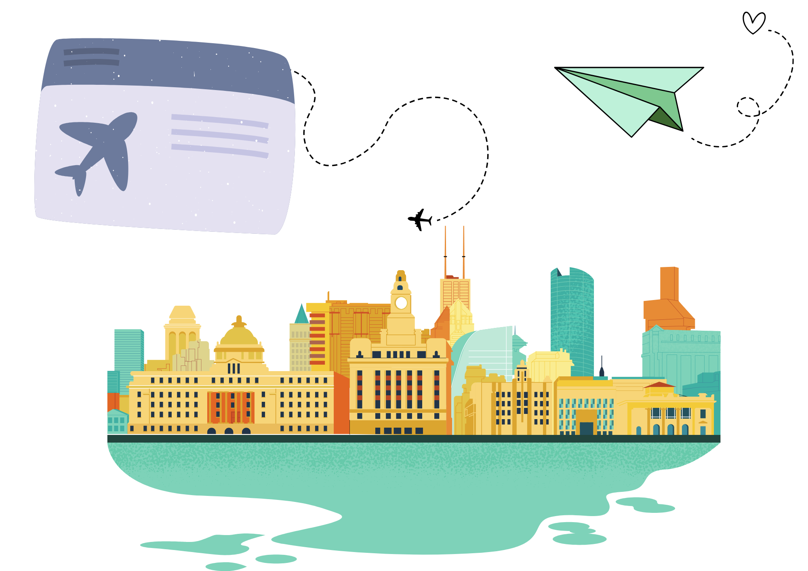

Traveling Across the East Coast
Boston & Cambridge (MA)
This summer, I flew by myself for the first time to visit my friends in Boston. While I was there, I stayed with one of my closest friends who was living there for the Summer to complete research.
I left for Boston around PST and arrived in the afternoon on at Boston Logan Airport. The friend I was staying with picked me up and we took the train back to her apartment. She was living in Cambridge with two others girls- and each of them were very welcoming. After I dropped off my stuff at her place, we ended up grabbing hotpot for dinner! Shortly after, I realized my friend had been sleeping with no pillows or blankets, and so I asked (demanded) that we get some. We ended our evening off buying things we'd need for our trip to New York later that night.
Despite landing in Boston and having all my stuff there, I really just spent about 2 days there because of all our traveling. However, it was such a beautiful city. I met up with a different friend who showed me the ins and outs of MIT. Their campus was incredibly unique and even featured a "banana lounge". The buildings were very modern but if you explored enough, there was so much old architecture styles that we don't have in CA. The buildings were beautiful and felt like they were built as art rather than for practicality.
New York City
Actually being in New York was such a fun experience! However, getting there was terrible. A few hours I arrived in Boston, my friend and I hopped on a bus to NYC at AM EST. We arrived in NY at around AM EST and I did not have an ounce of sleep- nor did I sleep on my flight to Boston. Being out on the streets of NYC while it was still dark was terrifying. Guided by google maps and the willpower to find caffeine, we eventually found ourselves crossing the Brooklyn Bridge and stumbling into Butler Cafe- a restaurant that became one of my top eats of the summer.
We spent 20 hours in NYC. During that time period, we did practically every touristy thing you could think of. We took the ferry, saw the Statue of Liberty, the Met, Central Park, Times Square, etc. We even watched a movie at the AMC in Times Square. My favorite thing about visiting NY was how much there was to do. At every corner, there was a new museum or some sort of activity. I really enjoyed its bustling atmosphere.
Maine & New Hampshire
Maine
One of my friends who lives in Maine drove to Boston to pick my friend and I up. Together, we drove back to Maine and explored the state. Maine was incredibly beautiful. There was so much agriculture, greenery, and natural colors everywhere. Nature outnumbered the amount of buildings and the entire place was very peaceful. While we were there, we visited the fanciest McDonalds I've ever seen and visited different cafes. Maine is one of those states where everything closes early, and so we ended up having a pretty fancy dinner in a hotel. Maine's fish & chips remain the best I've ever had. Out of all the states I visited, I miss Maine the most and I hope to come back in the Winter!
New Hampshire
New Hampshire was incredibly similar to Maine. Unfortunately, we didn't get to do much and weren't overly ecstatic about being there. We had missed our bus back to Boston and so for a little bit, my friend and I were stranded in New Hampshire. However, everyone we interacted with was very warm and welcoming. This state also had a very nice nature scene!
Rhode Island
Rhode Island is only 30 minutes away from Boston by train and so naturally, we had to visit. I absolutely adored Rhode Island. Like Maine & New Hampshire, there isn't much there besides nature but areas like Providence have such beautiful architecture. My friend and I had dinner at an ocean-side restaurant. The views were gorgeous. However, as we were wrapping up, the restaurant caught on fire and we had to evacuate.
After evacuating, we were forced to walk through the woods to reach civilization again and I was absolutely terrified. It was pitch black, I was relying on my phone flashlight, and my friend demanded that we play music to help not freak out (it didn't help). Thankfully, that walk in the dark ended quickly and we reached downtown Rhode Island. This state was very quiet, serene, beautiful, but also uncannily empty at times.
Travel Collage
Not featured- Caffeine to combat intense sleep deprivation nor money spent on ubers...